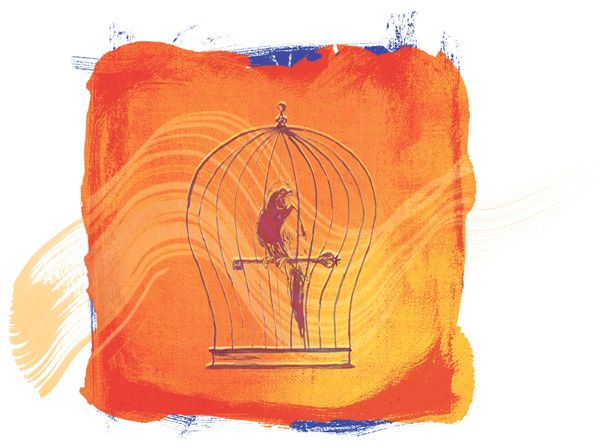

Talk About What You Love
When you talk about any difficulties with money, a relationship, an illness, or even that the profits of your business are down, you are not talking about what you love. When you talk about a bad event in the news, or a person or situation that annoyed or frustrated you, you are not talking about what you love. Talking about the bad day you had, being late for an appointment, getting caught in traffic, or missing the bus are all talking about what you don’t love. There are many little things that happen each day; if you get caught up in talking about what you don’t love, every one of those little things brings more struggle and difficulty to your life.
You have to talk about the good news of the day. Talk about the appointment that went well. Talk about how you love being on time. Talk about how good it is to be full of health. Talk about the profits you want your business to achieve. Talk about the situations and interactions you had in your day that went well. You have to talk about what you love, to bring what you love to you.

If you parrot negative things and squawk about the things you don’t love, you are literally jailing yourself, like a parrot in a cage. Every time you talk about what you don’t love, you are adding another bar to the cage and you are locking yourself away from all the good.
People who have great lives talk more about what they love. By doing so, they gain unlimited access to all the good in life, and they are as free as the birds that soar in the sky. To have a great life, break the bars of the cage that is jailing you; give love, talk only about what you love, and love will set you free!

“Then you will know the truth and the truth will set you free.”
Jesus (circa 5 BC-circa AD 30)
FOUNDER OF CHRISTIANITY, IN LUKE 6:38

Nothing is impossible for the force of love. No matter who you are, no matter what situation you may be facing, the force of love can set you free.
I know of a woman who through love alone broke the bars that caged her. She had been left in poverty and faced with bringing up her children by herself after twenty years of an abusive marriage. Despite the extreme hardship she faced, this woman never allowed resentment, anger, or any ill feeling to take root inside her. She never talked negatively about her ex-husband but instead gave only positive thoughts and words about her dream of a new, perfect, beautiful husband, and her dream of traveling to Europe. Even though she had no money to travel, she applied for and got a passport and bought small items she would need on her dream trip to Europe.
Well, she did meet her perfect and beautiful new husband. And after marrying, they moved to her husband’s home in Spain overlooking the ocean, where she now lives in happiness.
This woman refused to talk about what she didn’t love but instead chose to give love and think and talk about what she loved, and in doing so, she set herself free from hardship and suffering, and received a beautiful life.
You can change your life, because you have an unlimited ability to think and talk about what you love, and so you have an unlimited ability to bring everything good in life to you! However, the power you have is far greater than giving positive thoughts and words of the things you love, because the law of attraction is responding to your thoughts and your feelings. You have to feel love to harness its power!
“Love is the fulfilling of the law.”
Saint Paul (CIRCA 5-67)
CHRISTIAN APOSTLE, IN ROMANS 13:10